Good questions.
Interesting
possibilities.
A personal space for the things that spark my curiosity. Software, sunlight, growing systems, a life of faith, and the occasional thought worth following.

01 / SOFTWARE & AI02 / DIY SOLAR03 / HYDROPONICS04 / AQUASCAPES05 / FAITH & GRACEDifferent worlds.
Same curiosity.

Software in an AI era
Exploring how we build, think, and stay curious as software changes.

A little more sun-powered
An open notebook for DIY solar, small systems, and learning by making.

Roots, water, repeat
A space for hydroponic experiments and the quiet satisfaction of watching things grow.

Small worlds, underwater
Exploring the balance of plants, water, light, and a little patience.

Still on the Potter’s Wheel
A life of faith, still being shaped by grace.
A few musings.
Ideas in progress. Things noticed.
Questions worth sitting with.
SAMPLE NOTE
The interesting part is still the question
A reflection on curiosity, judgment, and building with new tools.
SAMPLE NOTE
A little less control, a little more observation
What a small growing system might teach us about paying attention.
SAMPLE NOTE
Making room for slow things
A few thoughts on patience, planted tanks, and everyday rhythms.
More than one kind of making.
This is my personal space for interests, experiments, and reflections. For the résumé, professional projects, and what I do for work, there’s a separate corner of the web.
Find the professional side ↗